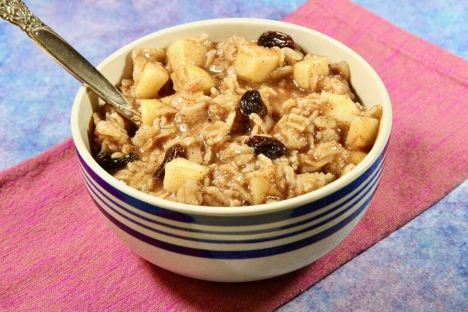

Back
Breakfast Oatmeal

Description
Start the day off right with a heart-healthy bowl of oatmeal.
Ingredients
- 1/2 cup rolled oats
- 3/4 cup water or milk
- Fresh blueberries, raspberries, and/or blackberries
- 2 tsp local honey
- 1/8 cup crushed walnuts
Steps
- Combine oats and water in a large cereal bowl
- Microwave for 2 minutes; stir
- Add an additional 30 seconds if liquid is not fully absorbed by oats
- Mix honey into oats
- Add fruit and walnuts
- Serve warm